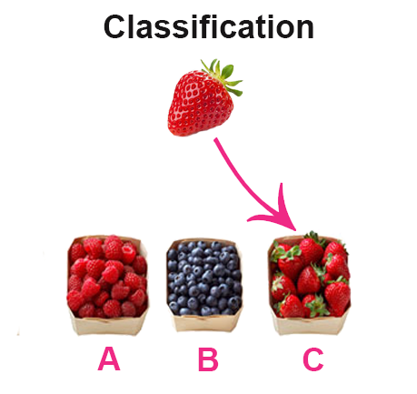

IELTS Reading lesson: Classification
In this lesson we’re going to learn about classification questions in IELTS Reading and how to answer them. As you can guess, classification questions ask you to classify information from the reading text. You have some statements from your text, and a list of options (listed as A, B, C etc.). Your task is to match each statement with the correct option.
Useful information:
- Answers here do not necessarily appear in order of the passage.
- You may use each option more than once.
Classification questions look like this on the question paper:
Classify the following statements as referring to
A Matthew Walker
B Ravi Allada
C Paul-Antoine Libourel
Write the appropriate letters A, B or C in boxes 1-5 on your answer sheet:
1) There are three main behavioural features incident to sleep.
2) The idea that we sleep because we have nothing else to do is absurd.
3) At some point in the evolution, a new stage of sleep appeared: rapid eye movement (REM) sleep.
4) Natural selection did not suppress sleep, but developed it.
5) Sleep makes animals’ reaction slower.
As you see, you’re tested on your ability to recognize the connection between facts from the text and their characteristics.
How to answer classification questions in IELTS Reading?
- Look at the given options (A, B, C).
- Skim over the text to get its general idea and see where each option is described. It may be useful to underline the options in the text, so it will be easier for you to find them later.
- Attentively read all the information that relates to the option A.
- Read the statements. If the statement corresponds to what you have just read, then classify it as A. You may use scanning to find the key words from the statement in the text.
- Repeat steps 3 and 4 with other options (B, C etc.)
Practice
To understand the theory better, let’s look at the following example: read the text and answer the questions below.
Questions 1-7
Classify the following statements as referring to
A Matthew Walker
B Ravi Allada
C Paul-Antoine Libourel
Write the appropriate letters A, B or C in boxes 1-7:
1) There are three main behavioural features incident to sleep.
2) The idea that we sleep because we have nothing else to do is absurd.
3) At some point in the evolution, a new stage of sleep appeared: rapid eye movement sleep.
4) Natural selection did not suppress sleep, but developed it.
5) Sleep makes animals' reaction slower.
6) Every major system in human's body suffers because of lack of sleep.
7) Muscles are not very active during sleep.
-------
Let’s take a closer look at the answering strategy and use it in practice.
Firstly, you look at the given options and skim over the text. You have 3 options at which you should focus:
- Matthew Walker
- Ravi Allada
- Paul-Antoine Libourel
After you’ve skimmed over the text, it’s a good idea to “divide” the text into 3 parts, each part relating to one option. We’ve coloured information relating to Matthew Walker in blue, information about Ravi Allada in rose and part about Paul-Antoine Libourel in yellow.
Now, read the first part attentively and look through the list of statements.
Why do we sleep?
Researchers have found that sleep is beneficial to humans in many ways: it helps us process memories, and keeps our social and emotional lives on track. Yet we still do not really know how, why or even exactly when sleep evolved.
“The cost of losing consciousness to survival is astronomical,” says Matthew Walker at the University of California in Berkeley. Whatever functions sleep performs, they must be so fundamentally important that they far outweigh the obvious vulnerability associated with being asleep.
This means we can confidently reject one of the simplest theories of sleep: that we drift off simply because we have nothing better to do. This could be described as the indolence theory of sleep. Once an animal has eaten, seen off any rivals and exhausted any potential mating opportunities, it effectively has an empty schedule, and losing consciousness kills time for a few hours.
It is a fun idea, but considering that a sleeping animal is significantly more likely to be caught and eaten than a waking animal, this hypothesis makes “zero sense”, says Walker.
There is now an emerging consensus on the behavioural features that define sleep, and these features can be used to look for sleep in simple animals, says Ravi Allada at Northwestern University in Evanston, Illinois.
There are three main elements, says Allada. First and foremost, sleep renders an animal quiet and still: muscles are not very active during sleep. Second, sleep makes animals slower to respond. For instance, if you make a loud noise near a sleeping animal, it will react more slowly than an awake animal. And finally, we can recognise sleep because it keeps animals from getting tired.
“I believe that the behavioural features used to characterise sleep are quite reliable for identifying this behaviour in animals… and to differentiate sleep from a simple rest,” says Paul-Antoine Libourel at the Lyon Neuroscience Research Center in France.
According to Libourel, sleep now appears to be an almost universal feature of animal life. “This suggests that sleep is fundamental for the survival of species. Natural selection did not suppress it. In fact, natural selection did the exact opposite: it built on the concept of sleep, adding in new stages and new functions.”
“At some point in prehistory, the most famous of all stages of sleep appeared: rapid eye movement (REM) sleep,” says Walker. “Non-REM sleep was the original form.”
Sleep impacts every major system in the body. Cut down on sleep and it is not just your brain that struggles: the reproductive, metabolic, cardiovascular, thermoregulatory and immune systems all suffer too, says Libourel.
All the explanations for sleep we have looked at ultimately boil down to the same thing: sleep is a state we enter to fix the systems that are put under stress when we are awake.
Answers & explanations
A. As you’ve read the information relating to Matthew Walker, look through the list of statements and see which ones correspond to what you have just read:
1) There are three main behavioural features incident to sleep.
2) The idea that we sleep because we have nothing else to do is absurd.
3) At some point in the evolution, a new stage of sleep appeared: rapid eye movement (REM) sleep.
4) Natural selection did not suppress sleep, but developed it.
5) Sleep makes animals’ reaction slower.
6) Every major system in human’s body suffers because of lack of sleep.
7) Muscles are not very active during sleep.
Clearly, sentences 2 and 3 belong to Matthew Walker. In the beginning of the text, he said:
This means we can confidently reject one of the simplest theories of sleep: that we drift off simply because we have nothing better to do.
And in the end of the passage, there’s Walker’s quote:
At some point in prehistory, the most famous of all stages of sleep appeared: rapid eye movement (REM) sleep.
B. Other statements are not referred to Mr. Walker, so we put letter A near statements 2 and 3 and move on to the next part. Now you should carefully read the Ravi Allada’s part and look through the rest of the statements:
1) There are three main behavioural features incident to sleep.
4) Natural selection did not suppress sleep, but developed it.
5) Sleep makes animals’ reaction slower.
6) Every major system in human’s body suffers because of lack of sleep.
7) Muscles are not very active during sleep.
Again, it is clear from the text that Ravi Allada describes 3 behavioural features that define sleep (statement 1). The first feature corresponds to statement 7:
First and foremost, sleep renders an animal quiet and still: muscles are not very active during sleep.
The second feature corresponds to statement 5:
Second, sleep makes animals slower to respond.
So, statements 1, 5 and 7 correspond to answer B.
C. Now, there are only statements 4 and 6 left. If you read the information referred to Paul-Antoine Libourel, you will make sure that statements 4 and 6 correspond to answer C.